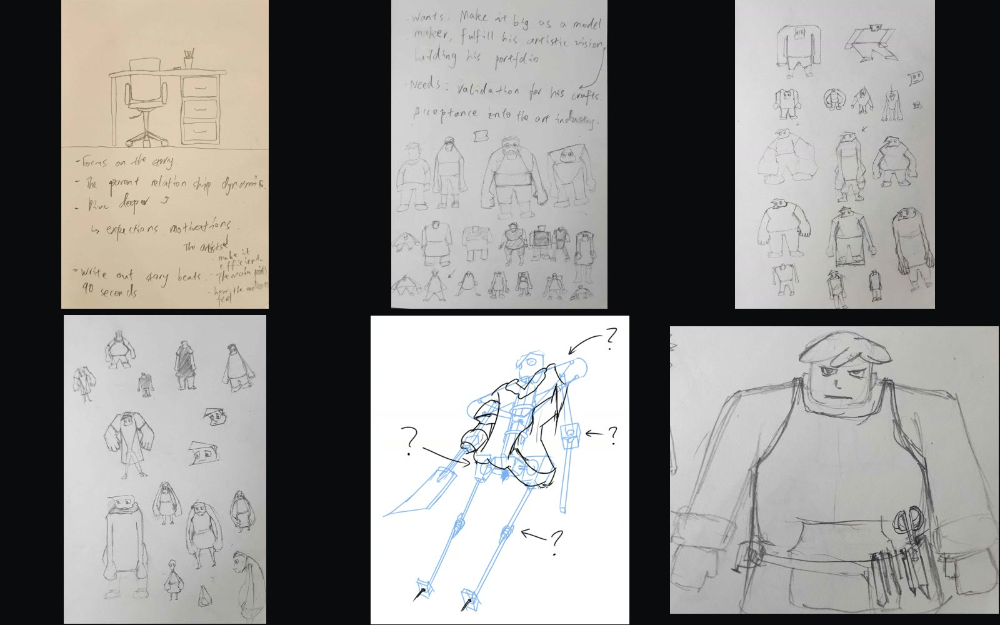
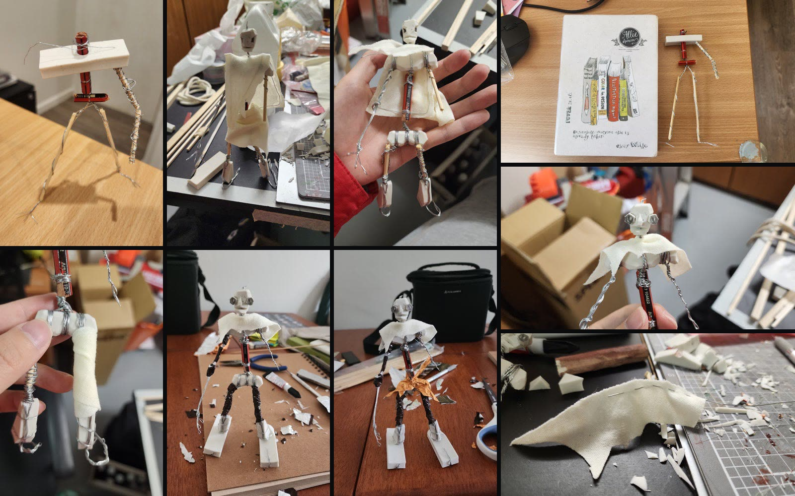
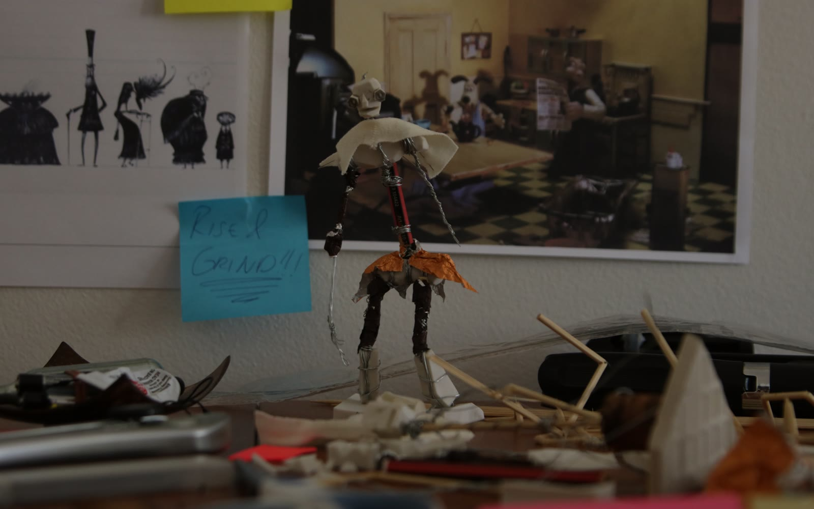
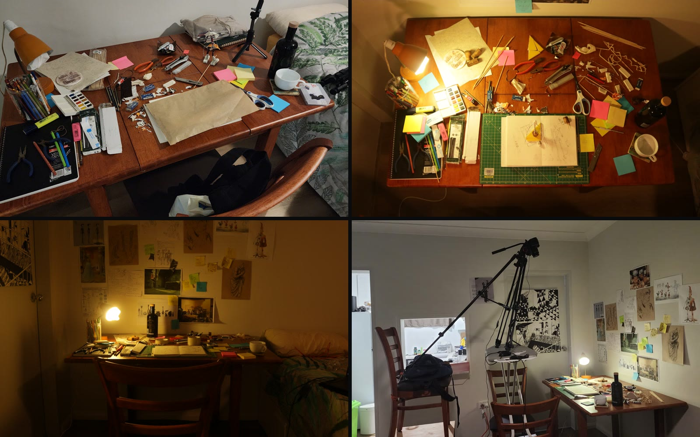
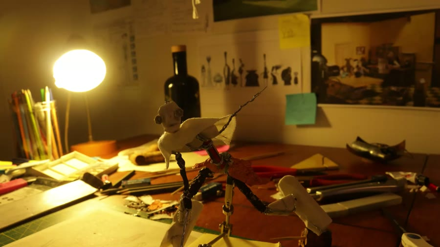
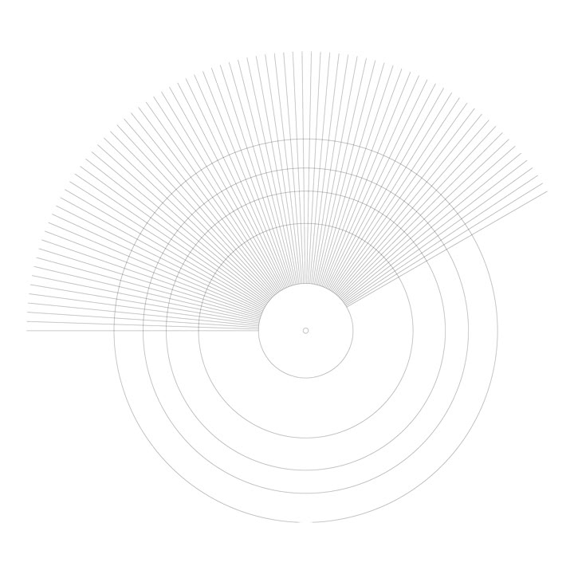

Piece It Together!
A short stop-motion and 2D animation comedy action flick, about a maker Vincent and their creation John Souls. The film’s idea stemmed from parent and child’s relationship, their expectation with each other, and the certain uncontrollable nature of the child choosing their own path. The conflict breaks out since John Souls was a flawed creation in Vincent’s eyes. However, as they were battling it out, John Souls starts to make its own decisions, adding bits and pieces, ultimately earning Vincent’s recognition. Made with Brandon Pen, using a hybrid of hand crafted stop-motion and 2D animation.
Process
The craft
The track below showcases a simple overview of our production pipeline.

The first draft
I experimented heavily with the different proportions for Vincent, even though I was never really fully satisfied with it, we had to move forward. So, in the end, I was happy that we decided to just go with Brandon’s interpretation of Vincent. While at this stage, the physical stop-motion armature of John I designed had its structure outlined, the details of the build, materials and joints were all still unresolved.
Animatic
We roughed out the entire film using mostly Storyboard Pro and Toon Boom Harmony, then cut it together into one time line. This was crucial for this project not just for the animation timing, but it also allowed us to break down all the scenes to create a shot list and refine schedule for production. This is a clip of our animatic showing one of the action sequences that appears towards the end of the film.
![Nine frames from the test shoots. The first night, top two rows: a hand adjusting a figure made of clothes pegs under a desk lamp, pegs and a pencil on the table, a wide view of the lit desk, an open sketchbook of character drawings beside the peg figure, paper held over the lamp to soften it, and the peg figure lit against a bare wall. Later tests, bottom row: the puppet standing on a table beside a seated animator, the puppet lit against a blown-out white background, and an animator working at the bench](../images/projects/pit-test.jpg)
Test shoots
Our very first test shoot day. We had a bunch of clothes pegs to make a stand in for John, so we could block out some scenes and test the lighting to see how things would look and feel on camera. Once we started iterating the actual puppet of John, we started testing it on set as well.

Building the stop-motion character
The iterative process I went through to design a physical puppet of John. The early phase of the build was trying to get the armature to stand on its own. To ensure this project was feasible, we needed to save our budget wherever possible. Having the armature to be able to stand on its own, greatly reduced the cost of post production rig removal, as the rig will only be needed when the character is in the air. The joints of John made from hobby wires had to withstand the use throughout the whole film. The fabric used as the cape for John I had to run wire through it while keeping it discreet, so it would allow me to mould the cape and hold its form during the stop-motion shoot. I decided to give massive feet to John, which helped a lot with the stability and the ease to animate during the shoot.

The finished stop-motion character
Using just ordinary material I would find in my messy desk and work space. The finished John Souls puppet blends into the space, ultimately representing the culmination and the result of the maker’s frustration.

Dressing the desk
The chaotic working space of the maker. It is a self reflection of the chaos that I run into during my creative journey when designing anything.
The shoot
During any stop-motion shoot, I always become hyper focused and get into a flow, since mistakes and reshoots are going to be costly.
Shot 4010
The smooth camera pan
The most challenging shot in the film. I wanted to create this dramatic moment when John Souls finally gains its own ground, getting more comfortable in its new born body, gaining awareness to improve or complete itself. Starting by adding parts to its missing arm by equipping a stabby weapon to it.

The room was modelled in Rhino CAD, with the animatic character drawn over it. Ideally we wanted an exact previz for such an important shot, however, it just wasn’t possible with our schedule and budget at the time. In the end, I pushed forward with our rough guide and animated it live on set.

Credits
Cast & Crew
- Directed & Animated byXinyuan (Tony) Chen, Brandon Pen
- Assistant AnimatorsJasmine Lai, Nikita Sutedjo
- Sound & Music DesignHugo Aguilera-Mendoza, Minoli De Silva
- Special ThanksYean Chong, Beatrice Robinson, Deborah Cameron, Laurent Auclair, Aidan Farrell, Nick Henderson, Hayden Jones